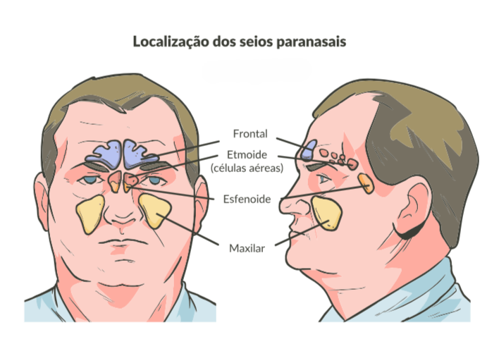

Os seios paranasais são cavidades situadas nos ossos frontal, maxilar, esfenoidal e etmoidal. Estas cavidades são forradas por glândulas e epitélio ciliar, que auxilia, por meio da ação ciliar, a drenagem do muco produzido nesses seios.

Fonte: Anatomical Chart Co., 1994.